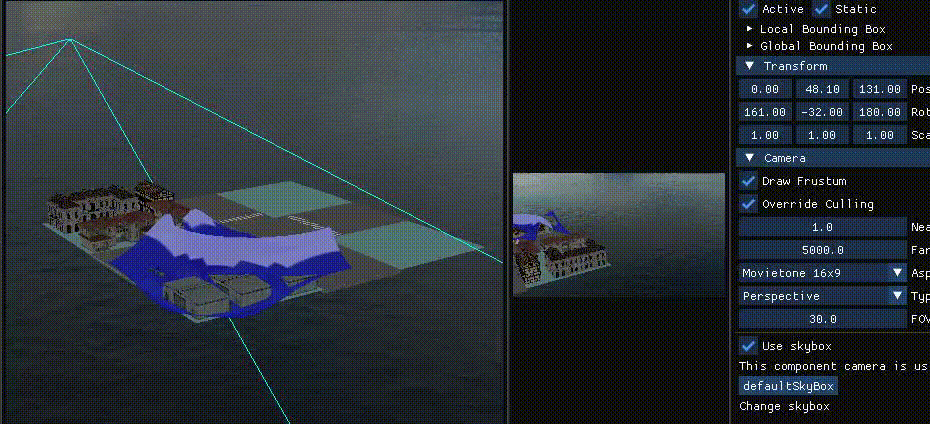
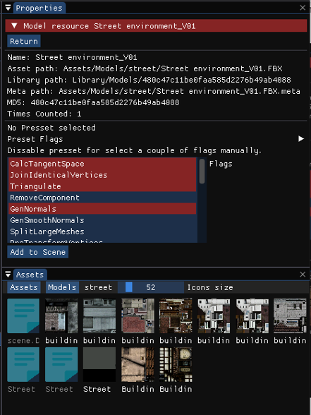
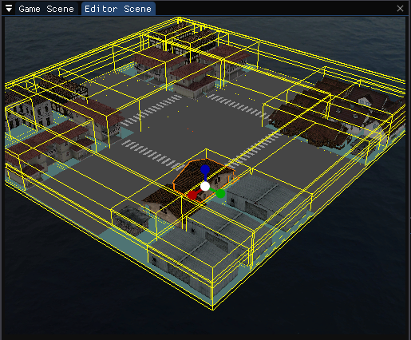
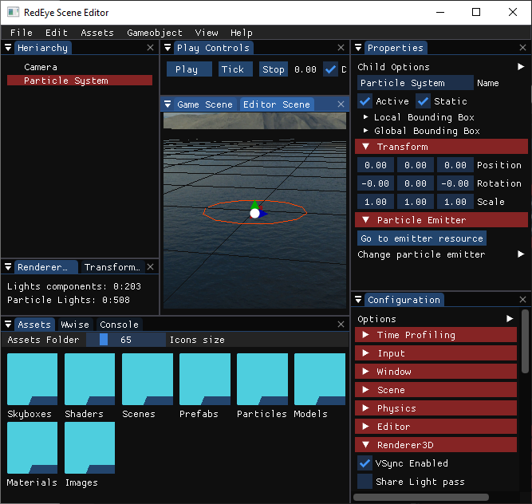
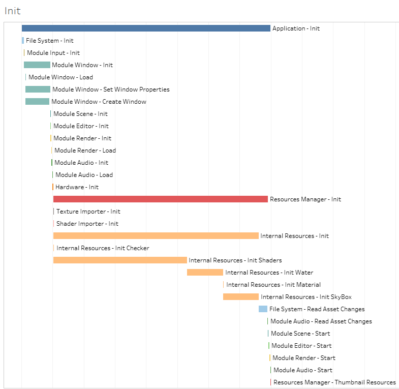

The application class is the engine’s skeleton. It holds all modules and it is the only class used in our C++’s main function call. Constructor and Initialization calls setup all systems and check for any errors during these procedures. Mainloop updates the modules each frame and controls timing to use extra milliseconds on secondary procedures. Application contains these modules:
▪ Input: Uses SDL Input subsystem to record I/O events from mouse and keyboard and also window’s events. The module counts with another queue reserved for Redeye’s systems’ internal events such as gameobjects changing transform or an editor window changing size.
▪ Window: Uses SDL Window subsystem to request a single window. We intend to expand its use to several windows at a later stage to allow for easier editor tabs organization.
▪ Scene: Holds the ECS (Entity-Component System) and complementary systems to manage it more efficiently. The Scene Optimization section digs deeper into how they operate.
▪ Physics: Latest module addition for building the new pipeline. It was envisioned to hold other physical entities apart from particles. The other planned features can be found listed at the What's Next? page.
▪ Editor: Powered by ImGUI, the editor module handles the user interface and lets us navigate, use and customize all the engine’s systems. It holds all the available menus and allows resizing, repositioning and docking them for a custom setup. Modules and some other classes have a DrawEditor function to portray data structures to the user interface. Check the User Interface section for an overview of the different editor windows.
▪ Renderer: Uses OpenGL to communicate with the GPU and draw scenes. It has numerous ways to customize how the scenes are displayed for each different viewport used: game, editor and particles. Toggle debug drawing options, light modes and other rendering flags. For a more detailed overview on how the different elements are drawn, check the Shader Pipeline section.
▪ Audio: Using Wwise, the engine can load and playback audio files. This powerful library is implemented scarcely as we wish to expand its use when setting up the scripting system and allow users to fully apply the audio engine’s features.
The previous modules are systems that require being updated each frame. Time controls and module settings are customizable through the Configuration panel. This panel should end up becoming an individual window, but because we have to test all the different configurations, we left it visible at the right-bottom corner. Project configuration is stored in a config.json file that saves your presets for later use.
Update-less systems contained within App include code for hardware detection, the console and file system. The console counts with options to filter logs based on their type or file source. Scene and resource loading are described in the Resource Managemen section.
Particle pipeline is the latest feature in v5.0. Through the physics module, particle simulations run and can be customized in numerous ways at the workspace window. It even counts with its own camera to display simulations without having to hit play on the scene. The editable fields can be split into emission, physics and rendering attributes.
Emission
▪ Max Particles: caps particle spawning to a given limit.
▪ Intervals: emission can be set to enable spawning at intermittent intervals or operate at different on and off intervals.
▪ Spawning Method: the default emitter is set to spawn a constant stream of particles and now can be changed to bursts. It requires defining the number of particles per burst and the time between bursts. Particularly useful for explosion effects where particles start flying in different directions at the same time.
▪ Timing: digging into the engine’s complementary systems, particles now react to the scene’s playback controls and have the option to start on par with the scene.
▪ Time multiplier: scales the speed of simulation playback
▪ Spawn frequency: defines number of new particles per second
▪ Lifetime: defines the amount of time particles will live. It can be set to a random value between a given interval.
▪ Speed: sets the initial speed a particle will hold when spawned. It can be set to a random value between a given interval.
▪ Emitter Shape: defines the area over which new particles will appear. This gets complicated to handle; because, if many particles are spawned with physics within a reduced amount of space, they will overlap, and some spawned particles will have an unnatural instantaneous resolution. So be warned of its mishaps when limiting particle space. Bounding the space to an even smaller margin for particles will saturate processing time with constant collisions. To face this issue, we set up 6 different types of emitter shapes: Point, Circle, Ring, Sphere, Hollow sphere and AABB.
▪ Parent Dependencies: parent position and speed are shown in the status tab and used when changing the emission from local to global space instantiation or if particles inherit the gameobjects speed. Because of the dynamically handled hash mapped ECS, we cannot store the gameobjects pointer for easy access and so the component handles the bridge between by sending the data to the emitter.
Physics
▪ External Forces: adds constant force acceleration to each particle to simulate gravity and/or wind.
▪ Boundary: boundaries have 3 different shapes available and editable through the ImGui editor fields. The need to resolve collisions can now be removed if we kill the particles when reaching the boundaries.
▪ Collider: Boundaries have no effect on collier-less particles. To check collisions, they must contain mass and restitution properties; and a radius, given they are set to spheres.
Rendering
▪ Orientation: for simple sprites, 3d effect is achieved by billboarding: aligning the sprite with the camera used. Choose between orientation configurations or set your own value.
▪ Geometry: choose between using imported meshes or primitive shapes to display using the simulations. We improved the particle system for optimized VAO management as we integrated them into the resource system.
▪ Color & Opacity: Change the color component of the geometry and modify its transparency. You can base these values on the simulation’s state such as over particle lifetime, distance or speed. Furthermore, the pipeline counts with curve input support.
▪ Lights: particles can be set to emit all the same light, or have independent light components. These properties include color, intensity and specular values. With the improved graphics memory allocation we increased maximum supported lights from 64 to 203. Further light configuration is available through the render module.
The engine at first used OpenGL calls to render geometry and it wasn’t until v2.0 shaders were added to the pipeline. Being able to draw simple grids with different water effects got us excited about the progress in rendering capabilities. Shaders were now part of the resource system and could be dropped and applied to mesh components. To take advantage of the new feature, we also added skybox support and outlines for selected geometries.
Editing the shaders outside the engine’s scope bothered us enough to decide to improve shader use for v3.0 and we added a shader editor tool to allow us to modify our shaders in-engine. Changes in shader code are parsed searching for defined uniform variables that are able to be set through the material’s resource properties for any material referencing the shader. The previous water shaders made are now defined as internal resources and there is a button that sets up a gameobject with their own water component with customizable uniform fields.
After playing with shaders, we were comfortable setting up more advanced rendering techniques and implementing lights through deferred shading. Instead of iterating light sources per vertex, the renderer has 2 passes. First, it outputs framebuffers with pixel data: position, diffuse, and normal. Then, it uses these buffers and sends light uniforms for lights to be iterated per pixel. This 2-step pipeline can be complemented by adding other rendering procedures like blurs, blooms, ambient occlusion.

The engine’s file system is powered using PhysFS open-sourced cross-platform library. We mount our data.zip file to a virtual directory and store all the files used. Inside data.zip we can find the Assets directory containing the actual raw files and a Library directory where we store files to a binary format. Library files are named by feeding the generated json format string to an MD5 generator that outputs a small unique string. This way, different files with the same content are not stored duplicated.
Procedures for loading resources are scoped for errors and reported as logs for the console to show. File changes in the directories are scoped using the extra milliseconds between frames. Our intention is to set up multi-threading so as to set calls at a parallel thread freeing the main one. Once resources (scenes, meshes, materials, skyboxes, etc.) are saved to the Library the renderer gets queued with thumbnails for the asset panel. Images files have the image itself for thumbnail in the Assets Panel, but other elements such as scenes require setting up a temporal scene and camera to output the asset thumbnail.
The scene module holds the Entity-Component System. Game objects are organized in a hierarchy and child global transforms are calculated based on their local transforms and their parents’ matrix. To improve scene performance we built different systems around the scene’s procedures.

Camera Manager
Scenes must have at least one main camera for the renderer to position the point of view. This manager flags which cameras must be used to render builds a default one when missing to ensure having a scene visual. Cameras store and update their frustum geometry to cull scene elements that are not contained within the viewport.
Dynamic AABB Tree
Camera culling iterated each triangle in the scene to check if the geometry was contained within the viewport. To improve this process we added a broad phasing procedure to reduce the amount of geometry checked by ordering the scene using a quadtree. This improved performance but we felt it could be improved. We thought about upgrading to an octree until we found Erin Catto’s documentation for Blizzard Entertainment’s Overwatch approach to scene space partitioning using a dynamic axis-aligned bounding box tree. The tree contains boxes paired through their minimum enclosing AABB surface area. Check out his detailed explanation here.
Hash mapped ECS
Cameras mentioned previously are positioned inside the scene as Camera Components. Compared to mesh components, cameras and transforms must update each frame if they or their parent’s transforms have been modified. The first implementation had to travel from game object to game object iterating the hierarchy in orden to find components who needed updated values.
As of v4.0, game objects and components are stored using a hash map. This way data is allocated in a contiguous manner for faster iteration. We used to allocate data without order with C++’s new calls and now each component type has their own array. This improved the update cycles but meant that pointers were now useless, as data is moved around inside the containers. To reference game objects or their components, we now use 64-bit unique number identifiers. Through the UIDs, we can map where in the hash the target structure is located.
All GUI elements are powered with the use of ImGui. This open-sourced library contains C++ renderer agnostic and self-contained methods for easy editor interface production. The editor module handles ImGui setup, holds interface windows and registers user activity. If we were to choose the most interesting editor windows, we must mention the shader editor that allows shader code files to be edited and reloaded into the pipeline and the particle workspace window where simulations can be edited thoroughly. The editor also contains debug drawing calls such as a default grid positioned at origin. Grid, game object AABBs and scene space partitioning geometry drawing can be configured in the editor’s settings together with the rest of modules.
On opening the engine, the editor runs ImGui, shows numerous windows and has 2 viewports on display: Game Scene from the scene’s main camera and the Editor Scene with the editor’s camera viewpoint. The editor counts with its own camera component and controls such as: selecting game object (mouse click), focus camera on selection (F), orbiting selection (Alt + Mouse move) and free movement (WASD). When selecting a game object, the hierarchy expands and the properties tab show’s selection’s components and game object values. Translation, rotation and scaling gizmos will also appear. Transform procedures get queued and can be undone (Ctrl+Z) or redone (Ctrl+Y).
Profiling refers to measuring our systems’ performance. At first we decided to implement Brofiler and output function calls to the listener app. It is a powerful tool full of features, but our interest lies in being able to analyze data visually through the use of Tableau. We can feed Tableau procedure data to create graphs from raw fields or calculated ones to represent the engine’s performance to our liking. Using C++ macros, we set up different code configurations for testing environments so as to not pollute code with unnecessary profiling in release versions. The macros re-define the already present Brofiler calls and store procedure timings. The next table shows a Gantt distribution of RedEye’s startup procedures. Shader setup occupies around 60% of Application’s initialization.
To test the latest particle system, we expanded RedEye’s internal profiling so as to procure different executable files that run subsequent simulations. Once a simulation reaches a duration threshold, it is cleared and edited for the next one. The simulations reached up to 400K particles updated in under a thirtieth of a second (33ms). Programming data-oriented design paradigms into the particle pipeline improved particle cap and results were able to be evaluated comparing test performances.
This website forms part of the engine’s development. Not only do we want users to explore our engine, but we also aim for supporting them through complementary published resources. The read.me file is displayed at the repository’s main page and we had a simple wiki filled out. We only used Github’s repository page to showcase the engine, but now we expanded it to include the engine’s own website.
Because we still wanted everything in RedEye to be open-sourced, we used Github’s domain linking to set it up directly from the repository. To build the site’s elements, we used Bootstrap’s front-end open source toolkit. Find out how the code ended at the docs folder.
Image